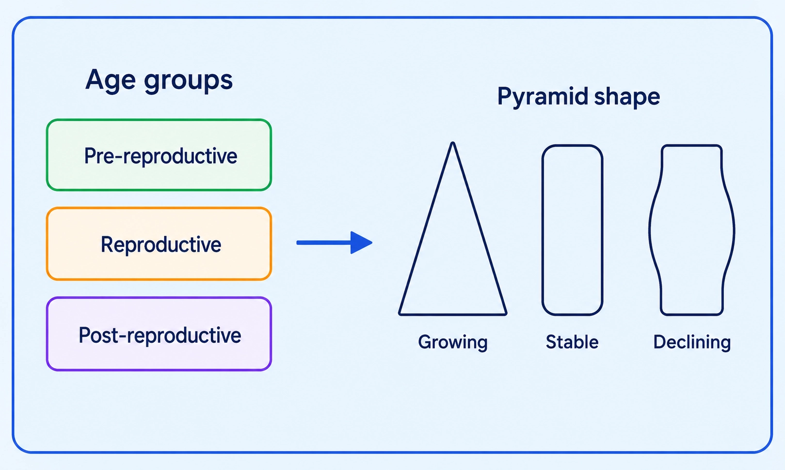
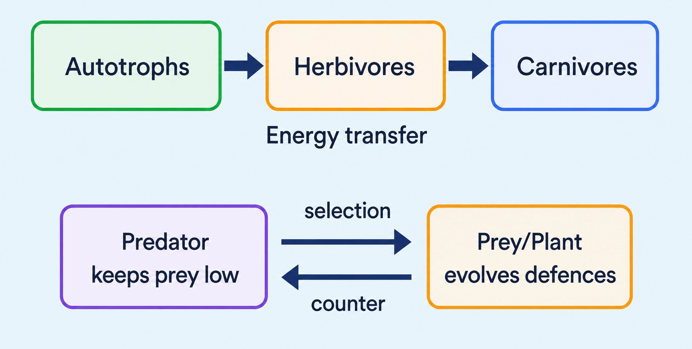

Biology
Study life at different levels; at any level, ask how (mechanism) and why (significance)
Organisms and Populations
📖Definition & Introduction
- Levels of biological organisation are hierarchical stages used to study complexity, from biomolecules to higher ecological units.
- Lower levels help explain structure and immediate processes; higher levels show interactions and emergent properties.
- How-type questions ask the mechanism: how a process occurs (structures, steps, immediate causes).
- Why-type questions ask the significance: what the process achieves/why it matters (function, advantage, outcome).
- The same observation (at the same level) can generate both how-type and why-type questions.
🖼️Diagram
🎯Key Concepts
- 🧪Levels (basic): macromolecules → cells → tissues → organs → organism
- 🌍Ecology levels (chapter use): organism → population → community → biome (biosphere is global sum of ecosystems)
- 🧩Higher levels show emergent properties due to interactions among components
- 🔍How = mechanism; Why = significance in ecological/evolutionary context
- 🦜Bulbul: how sings (voice box, vibrations) vs why sings (communication in breeding/territory)
🔎LEVELS OF ORGANISATION (WHAT EACH LEVEL MEANS)
- Macromolecules: DNA, proteins, lipids etc. that underlie cell functions.
- Cell: basic unit of life; smallest unit showing life processes.
- Tissue: similar cells (plus intercellular material) performing a function.
- Organ: multiple tissues integrated into one functional unit (e.g., leaf, kidney).
- Organism: one living individual showing homeostasis and responses.
⚙️HOW-TYPE vs WHY-TYPE QUESTIONS (EXAM-READY EXAMPLES)
- Bulbul singing: how—voice box and vibrating structures generate sound.
- Bulbul singing: why—communicates with mate during breeding season; signals territory.
- Night-blooming flowers: why many are white—better visibility to nocturnal pollinators in low light.
- Bee and nectar: how a bee chooses a flower—uses sensory cues (odour/visual patterns) to locate nectar.
- Cactus thorns: why—defence against herbivores; also reduces water loss by shading and reducing air movement near surface.
⚖️HOW-type vs WHY-type Questions
| Basis | HOW-type (Mechanism) | WHY-type (Significance) |
|---|---|---|
| Asks about | How a process occurs | What the process achieves/why it matters |
| Key words | How, by what mechanism, which steps/structures | Why, what for, significance, advantage |
| Answer should include | Structures/steps/immediate causes | Functional role in context (e.g., survival, reproduction) |
| Bulbul example | Voice box and vibrating structures produce sound | Communicates with mate during breeding; signals territory |
| Common mistake | Giving only a purpose without mechanism | Naming an organ but not stating its significance |
✏️Solved Q&A
1
A question asks: Why does cactus have so many thorns? Identify the question type and write a model answer in one line.
Answer:
This asks for significance (what the trait achieves), not the mechanism of thorn formation.
State a survival advantage in habitat.
This asks for significance (what the trait achieves), not the mechanism of thorn formation.
State a survival advantage in habitat.
✓ WHY-type; thorns protect against herbivores and can reduce water loss in arid conditions.
2
Convert the statement into two exam questions: Night-blooming flowers are generally white.
Answer:
Frame a HOW question about the immediate cause/feature (pigments/reflectance) that makes petals appear white.
Frame a WHY question about the advantage in the pollination context at night.
Frame a HOW question about the immediate cause/feature (pigments/reflectance) that makes petals appear white.
Frame a WHY question about the advantage in the pollination context at night.
✓ HOW? How do petal pigments/reflectance make night-bloomers appear white in low light?
WHY? Why does white colour help attract nocturnal pollinators at night?
WHY? Why does white colour help attract nocturnal pollinators at night?
⭐Important Points
- In this chapter, ecology is discussed mainly at four levels: organism, population, community, biome.
- Population = same species in a well-defined geographical area, sharing resources and potentially interbreeding.
- How answers need structures/steps; why answers must state significance (what it achieves) in context.
- A single observation can generate both how-type and why-type questions at the same level.
- Do not answer a WHY-type question by only naming an organ/structure; also state its role/advantage.
💡Memory Technique
“Mnemonic: MCTOO P C E B + HOW = steps, WHY = significance”
📌Quick Recap
At any level of organisation, you can ask two question types: HOW (mechanism) and WHY (significance).HOW-type answers: structures involved + sequence of steps + immediate causes.WHY-type answers: function/outcome + advantage/role in context (often linked to survival/reproduction).Bulbul singing: HOW—voice box and vibrating structures produce sound; WHY—communication with mate/territory (breeding season).Ecology levels used in chapter: organism, population, community, biome (biosphere is global sum of ecosystems).
Same species + same area + similar resources ⇒ unit of ecology, selection, and evolution
POPULATION CONCEPT
📖Definition & Introduction
- Population = individuals of the same species living in a well-defined geographical area, sharing/competing for similar resources, and potentially interbreeding.
- Population is the key ecological level where organisms behave as an organised group rather than isolated individuals.
- Interbreeding implies sexual reproduction; however, for ecological studies, a group of individuals of the same species produced by asexual reproduction in a defined area is also treated as a population.
- A population is defined by both species identity and a spatial boundary (pond, wetland, forest tract, culture plate, dwelling).
- Population ecology uses this unit to study how environments shape survival and reproduction across generations.
🖼️Diagram
🎯Key Concepts
- 🗺️Boundary matters: a population is tied to a specific habitat/area, not the whole species globally.
- 🍽️Members share/compete for similar resources (food, space, nesting sites, light, nutrients).
- 🧬Gene pool idea: populations contain heritable variation; evolution is tracked as changes in populations over generations.
- 🔁Asexual groups (e.g., bacteria on a plate) still form a population for ecological study if they are the same species in a defined space.
- 🎯Natural selection operates at population level: differential survival/reproduction changes population trait frequencies over time.
🔎EXAMPLES (ALL MUST BE SAME SPECIES + DEFINED CONTEXT)
- Cormorants in a wetland (one species within that wetland boundary).
- Rats in an abandoned dwelling (dwelling = spatial unit).
- Teakwood trees in a forest tract (tract = defined area).
- Bacteria on a culture plate (asexual, yet treated as a population).
- Reject mixed-species examples: “birds in a wetland” is a community, not one population.
⚙️WHY POPULATION ECOLOGY LINKS TO SELECTION, GENETICS & EVOLUTION
- Selection acts on phenotypes of individuals, but the outcome is a change in population composition over generations.
- Ecological pressures (climate, predators, resources) cause differential survival and reproduction among individuals.
- Over generations, this shifts the population gene pool (evolution).
- Thus population connects ecology with population genetics and evolution.
⚖️Population vs Community vs Species (Exam Confusions)
| Basis | Population | Community | Species (concept) |
|---|---|---|---|
| Members | Same species | Many species (many populations) | All organisms that can interbreed (share a gene pool) |
| Area requirement | Defined geographical area (local boundary) | Same area (habitat) containing many populations | Not defined by one local boundary; has a distribution/range |
| Key link | Resource sharing/competition + (potential) reproduction within the area | Interspecific interactions among populations | Reproductive isolation from other species |
| Example | Cormorants in a wetland | Birds + fish + plants in a wetland | Cormorants across their entire distribution |
✏️Solved Q&A
1
A pond has lotus plants, fish, algae, and frogs. What is the population and what is the community?
Answer:
A population is one species within the pond boundary (e.g., lotus plants in that pond).
A community includes all interacting populations in that pond (lotus + fish + algae + frogs).
A population is one species within the pond boundary (e.g., lotus plants in that pond).
A community includes all interacting populations in that pond (lotus + fish + algae + frogs).
✓ Population: any one species group in that pond (e.g., lotus plants). Community: all species/populations together in that pond.
2
Why is bacterial growth on a culture plate treated as a population even though there is no interbreeding?
Answer:
Population ecology needs a group of the same species in a defined space sharing and competing for resources.
Even in asexual reproduction, individuals show group-level dynamics (competition, changes in number and traits over time).
Population ecology needs a group of the same species in a defined space sharing and competing for resources.
Even in asexual reproduction, individuals show group-level dynamics (competition, changes in number and traits over time).
✓ Because it is the same species confined to a defined area sharing resources; ecological studies treat such asexual groups as populations.
⭐Important Points
- Population needs: same species + well-defined area + shared/competing resources + potential reproduction (sexual; asexual groups also considered).
- Population is the key unit for studying group responses to environment.
- Natural selection operates at population level: changes are seen as shifts in population traits/gene pool over generations.
- Do not mix levels: one species group = population; many species together = community.
💡Memory Technique
“Mnemonic: SASP = Species–Area–Similar resources–(Potential) reproduction”
📌Quick Recap
Population (ecology): individuals of the same species in a well-defined geographical area.Members share/compete for similar resources.Members potentially interbreed; groups of the same species reproducing asexually in a defined area are also treated as populations.Examples: cormorants (wetland), rats (dwelling), teakwood (forest tract), bacteria (culture plate), lotus (pond).Natural selection: acts on individuals, but operates at the population level in terms of evolutionary outcome.
Population-level features: rates, ratios and age-structure that reveal growth status
POPULATION ATTRIBUTES
📖Definition & Introduction
- Population attributes are characteristics of a population that an individual organism does not have.
- They are measured for a group of same species in a defined area and time interval.
- Key attributes: per capita birth/death rates, sex ratio, and age distribution.
- These attributes help predict whether a population is growing, stable, or declining.
- Always specify the time unit when describing rates (per year, per week, etc.).
🖼️Diagram
Three core population attributes and how age pyramid shape reflects growth status.
🎯Key Concepts
- 👶Per capita birth rate: new individuals added relative to initial population, per time unit.
- ⚰️Per capita death rate: individuals died relative to initial population, per time unit.
- ⏱️Rates without a time unit are incomplete in ecology answers.
- ♀️♂️Sex ratio expresses proportion/percentage of females and males in a population.
- 🎂Age distribution: percent individuals in age groups (pre-reproductive, reproductive, post-reproductive).
- 🔺Age pyramid shape indicates growth status: growing, stable, or declining.
🔎PER CAPITA BIRTH & DEATH RATES (b, d)
- A population has rates; an individual has only birth/death events.
- Per capita rate means contribution per individual during a stated interval.
- Birth rate example idea: if 20 lotus become 28 in a year, births are expressed per lotus per year (added/initial).
- Death rate example idea: if 4 out of 40 fruitflies die in a week, deaths are expressed per fruitfly per week (deaths/initial).
- Always write the time unit with the rate (per year, per week, etc.).
⚙️AGE DISTRIBUTION & AGE PYRAMIDS
🖼️ Diagram

- Age distribution = percentage in each age group of a population.
- Human age pyramids often plot males vs females across age classes.
- Broad base (more young) suggests future recruitment is high ⇒ growing.
- Nearly uniform width suggests births ≈ deaths over long term ⇒ stable.
- Narrow base (fewer young) suggests fewer replacements ⇒ declining.
⚖️AGE PYRAMID SHAPE vs POPULATION STATUS
| Basis | Growing | Stable | Declining |
|---|---|---|---|
| Base (young) | Broad base; many young | Moderate base | Narrow base; few young |
| Relative pattern | Pre-reproductive > reproductive | Pre-reproductive ≈ reproductive | Pre-reproductive < reproductive/older |
| Future trend | High replacement potential | Population roughly constant | Low replacement; may shrink |
| Typical diagram | Triangle-like | Bell/rectangle-like | Urn/inverted triangle-like |
✏️Solved Q&A
1
Why are birth rate and death rate called population attributes and not individual attributes?
Answer:
An individual organism shows a birth or death only as an event.
A rate needs a reference population size and a defined time interval.
So per capita birth/death rates describe change per individual per unit time, which is meaningful only for a population.
An individual organism shows a birth or death only as an event.
A rate needs a reference population size and a defined time interval.
So per capita birth/death rates describe change per individual per unit time, which is meaningful only for a population.
✓ Because rates require population size and time, they apply to populations, not to a single individual.
2
A human population shows an age pyramid with a narrow base. What does it indicate, and why?
Answer:
Narrow base means fewer pre-reproductive individuals than older groups.
Fewer young individuals means fewer future adults entering the reproductive group.
Therefore replacement potential is low and the population tends to decline.
Narrow base means fewer pre-reproductive individuals than older groups.
Fewer young individuals means fewer future adults entering the reproductive group.
Therefore replacement potential is low and the population tends to decline.
✓ It indicates a declining population due to low proportion of young individuals (low replacement potential).
⭐Important Points
- Always express birth/death as per capita values and write the time unit.
- Do not report just "8 births" or "4 deaths" as population attributes; state per capita rates.
- Sex ratio is a population proportion; it can shift due to differential mortality or migration.
- Age distribution is best written as percent in age groups, not as a list of ages.
- Age pyramid shape is a fast indicator of growing vs stable vs declining populations.
💡Memory Technique
“Mnemonic: R-S-A = Rates, Sex, Age”
📌Quick Recap
Population attributes are measurable properties of a population, not of a single individual.Per capita birth rate and per capita death rate are expressed per individual per unit time.For per capita birth/death during an interval, the reference is the initial population size for that interval.Sex ratio describes the proportion/percentage of females and males in a population.Age distribution is the % individuals in age groups (pre-reproductive, reproductive, post-reproductive).Age pyramids indicate growth status: growing (broad base), stable (nearly uniform), declining (narrow base).
How ecologists express/estimate population size (N) when counting individuals is hard or misleading
POPULATION DENSITY MEASURES
📖Definition & Introduction
- Population density (N) is the population size in a habitat; the basic reference for population ecology.
- Change in N indicates status of population (flourishing/declining) and tracks effects of competition, predation, pesticides.
- N need not mean only total number; it can be expressed as number, percent cover, biomass, or indices.
- Choose a measure that is practical and reflects the organism’s ecological role in that habitat.
- Often, relative density is sufficient; indirect signs can substitute direct sighting/counting.
🖼️Diagram
Population density (N) can be expressed directly (number/% cover/biomass) or estimated (relative/indirect indices).
🎯Key Concepts
- 🎯Ecology evaluates any population process by observing change in N over time.
- 🔢Total number is best when individuals are countable and similar in impact.
- 🌿Percent cover suits plants/colonies where area occupied matters more than counts.
- ⚖️Biomass suits populations with huge size differences among individuals.
- 🪤Relative indices estimate density via catch/encounter rates (e.g., fish per trap).
- 🐾Indirect indices use signs like pug marks and faecal pellets (e.g., tiger census).
🔎WHEN 'NUMBER OF INDIVIDUALS' FAILS
- Counting may be impractical for extremely large populations (e.g., dense microbes).
- Counting may be misleading when individuals differ greatly in size/impact.
- Example: 200 Parthenium plants + 1 huge banyan; banyan count is low but role is high.
- Then prefer % cover (space occupied) or biomass (living mass contribution).
⚙️RELATIVE & INDIRECT ESTIMATION (FIELD ECOLOGY)
- Relative density: compare sites/times using an index; absolute N not essential.
- Example: fish caught per trap as a proxy for lake population density.
- Indirect estimation: use signs/traces when organisms are elusive or nocturnal.
- Tiger census examples: pug marks and faecal pellets as field indices.
⚖️WAYS TO EXPRESS/ESTIMATE POPULATION DENSITY (N)
| Measure | What is recorded | Best used when |
|---|---|---|
| Total number | Individuals counted | Counting is feasible; individuals similar in size/impact |
| Percent cover | Area occupied/canopy cover | Plants/colonies; space captured matters more than counts |
| Biomass | Total mass of living matter | Individuals vary greatly in size; want ecological contribution |
| Relative index | Catch/encounter rate (proxy) | Only comparison needed; sampling gives consistent index |
| Indirect index | Signs (tracks, pellets, etc.) | Species hard to see/count directly; large-area surveys |
✏️Solved Q&A
1
Why can percent cover or biomass be a better measure of population density than total number in some plant communities?
Answer:
If individuals differ greatly in size, a simple count underestimates large, dominant individuals.
In a plot with many small weeds (Parthenium) but one huge banyan, banyan count is low yet it controls light, space and resources.
So % cover (space/canopy occupied) or biomass better reflects ecological importance.
If individuals differ greatly in size, a simple count underestimates large, dominant individuals.
In a plot with many small weeds (Parthenium) but one huge banyan, banyan count is low yet it controls light, space and resources.
So % cover (space/canopy occupied) or biomass better reflects ecological importance.
✓ Because counts ignore size/space capture; % cover/biomass better represent ecological role when individuals vary greatly.
2
In a lake study, why might an ecologist report 'fish caught per trap per day' instead of absolute number of fish?
Answer:
Direct counting of all fish is impractical in open water and large areas.
A standardised trapping effort gives a repeatable proxy linked to abundance.
For many questions (trend, site comparison, pesticide impact), relative density is sufficient if sampling is consistent.
Direct counting of all fish is impractical in open water and large areas.
A standardised trapping effort gives a repeatable proxy linked to abundance.
For many questions (trend, site comparison, pesticide impact), relative density is sufficient if sampling is consistent.
✓ Because a standardised catch-per-trap index is practical and adequate for relative density comparisons when absolute counts are unnecessary.
⭐Important Points
- N (population density) is the basic reference to study competition, predation and pesticide effects.
- Density is not always 'number of individuals'; pick the measure matching ecological meaning.
- % cover is especially useful for vegetation where area occupied drives interactions.
- Biomass is preferred when individuals differ widely in size and contribution.
- Relative/indirect indices are valid when absolute density is not required or cannot be obtained.
💡Memory Technique
“NCBI + TI: measures of N”
📌Quick Recap
N = population density / population size used as the core ecological reference.Best direct measures: number, % cover, biomass (choose by meaning + practicality).Number may be misleading when individuals vary greatly in size (banyan vs Parthenium).Relative density uses a proxy: e.g., fish caught per trap to compare abundance.Indirect estimation uses signs: e.g., tiger census via pug marks and faecal pellets.
Change in population density via births, deaths, entry and exit: the balance idea
POPULATION GROWTH BALANCE
📖Definition & Introduction
- Population density N changes over time due to four processes: natality, mortality, immigration, emigration.
- Natality (B) and immigration (I) add individuals to a population.
- Mortality (D) and emigration (E) remove individuals from a population.
- Net change depends on the balance between additions and losses during the same time interval.
- Immigration becomes especially important when a new habitat is being colonised.
🖼️Diagram
Population density N increases by B and I, decreases by D and E.
🎯Key Concepts
- Additions: B (births) + I (immigrants)
- Losses: D (deaths) + E (emigrants)
- Use brackets: compute ( B + I ) and ( D + E ) separately, then subtract.
- Colonisation: I may strongly raise N even when B is low.
- Increase if ( B + I ) > ( D + E ); decrease if ( B + I ) < ( D + E ).
🔎POPULATION BALANCE (DISCRETE TIME STEP)
- From time t to t+1, start with Nt and update using net gain/loss.
- Net gain/loss over the interval = (births + entrants) − (deaths + leavers).
- Bracket rule: evaluate ( B + I ) and ( D + E ) first, then subtract to avoid sign errors.
⚙️INCREASE / DECREASE CONDITIONS (EXAM-FAVOURITE)
- Increase: ( B + I ) > ( D + E ) means additions exceed losses in that interval.
- Decrease: ( B + I ) < ( D + E ) means losses exceed additions in that interval.
- No change: ( B + I ) = ( D + E ) means stable population size for that interval.
- Special case: in a newly colonised habitat, immigration (I) may contribute more than births (B).
⚖️FOUR PROCESSES AFFECTING POPULATION DENSITY
| Process | Symbol | Effect on N |
|---|---|---|
| Natality (births) | B | Increases N |
| Immigration (entry) | I | Increases N |
| Mortality (deaths) | D | Decreases N |
| Emigration (exit) | E | Decreases N |
✏️Solved Q&A
1
Concept check: If a population shows no net change in size between t and t+1, what must be true about additions and losses?
Answer:
No net change means the number added equals the number removed in the same interval.
Additions are births plus immigration: ( B + I ).
Losses are deaths plus emigration: ( D + E ).
Therefore, stability requires ( B + I ) = ( D + E ).
No net change means the number added equals the number removed in the same interval.
Additions are births plus immigration: ( B + I ).
Losses are deaths plus emigration: ( D + E ).
Therefore, stability requires ( B + I ) = ( D + E ).
✓ Stable population for that interval requires ( B + I ) = ( D + E ).
2
Reasoning: In a newly colonised habitat, population size can increase even if deaths exceed births. Explain.
Answer:
In colonisation, immigration (I) can be large because individuals enter from outside.
Even if local births are low and deaths are relatively high, total additions are ( B + I ).
If immigration is high enough that ( B + I ) > ( D + E ), the population still increases.
Thus, migration terms can outweigh local natality and mortality during colonisation.
In colonisation, immigration (I) can be large because individuals enter from outside.
Even if local births are low and deaths are relatively high, total additions are ( B + I ).
If immigration is high enough that ( B + I ) > ( D + E ), the population still increases.
Thus, migration terms can outweigh local natality and mortality during colonisation.
✓ High immigration can make total additions exceed total losses, so N increases despite deaths being more than births.
⭐Important Points
- Always group additions and losses using brackets to avoid sign mistakes.
- Compare ( B + I ) with ( D + E ) for increase/decrease questions.
- Births and deaths are usually the main drivers; migration matters mainly in special situations.
- Colonisation is a key case where immigration can dominate population increase.
- N denotes population size/density; the balance statement applies to a specified time interval.
💡Memory Technique
“BI adds, DE subtracts”
📌Quick Recap
Four processes changing N: natality (B), mortality (D), immigration (I), emigration (E).Additions in an interval: ( B + I ).Losses in an interval: ( D + E ).Increase condition: ( B + I ) > ( D + E ).Decrease condition: ( B + I ) < ( D + E ).Stable condition: ( B + I ) = ( D + E ).
Unlimited resources → per capita rates constant → J-shaped increase in population size
EXPONENTIAL GROWTH MODEL
📖Definition & Introduction
- Exponential (geometric) growth is population increase under unlimited resources with constant per capita rates.
- Population size/density is denoted by N; plot of N vs time gives a J-shaped curve.
- b and d are per capita birth and death rates (per individual per unit time).
- Net per capita increase is r = (b − d), called intrinsic rate of natural increase.
- Differential form: dNdt = rN; integrated form: Nt = N0 ert.
🖼️Diagram
🎯Key Concepts
- 🧬r is a crucial parameter to assess the impact of any biotic or abiotic factor on population growth.
- 👤b, d are per capita; total births and deaths scale with N (rates bN and dN).
- ⏱️If r is constant, growth rate increases as N increases because dNdt ∝ N.
- 🔢e = 2.71828 appears in the integrated solution of the differential equation.
🔎DERIVATION SNAPSHOT (FROM PER CAPITA RATES)
- In a short interval dt: births = bNdt, deaths = dNdt.
- Net change: dN = (bNdt − dNdt) = (b − d)Ndt.
- So dNdt = (b − d)N = rN.
- Separate and integrate: dNN = r dt → lnN = rt + constant.
⚙️EXAM NUMBERS TO REMEMBER (MAGNITUDE OF r)
- Norway rat: r = 0.015 (per unit time).
- Flour beetle: r = 0.12 (per unit time).
- Human population in India (1981): r = 0.0205 year−1.
- Larger r → faster rise of N under ideal (unlimited-resource) conditions.
⚖️EXPONENTIAL MODEL: SYMBOLS AND MEANINGS
| Symbol | Meaning | Exam cue |
|---|---|---|
| N | Population size/density at a given time | Variable that changes with time |
| b | Per capita birth rate | Not total births; has time−1 unit |
| d | Per capita death rate | Not total deaths; has time−1 unit |
| r = (b − d) | Intrinsic rate of natural increase (net per capita growth rate) | Key parameter in exponential model |
| e | Base of natural logarithms = 2.71828 | Arises in integrated form |
🧮Formulas
Start with per capita births and deaths over a small time dt:
dN = (bNdt) − (dNdt)
Divide by dt:
dNdt = (b − d)N
Define intrinsic rate:
r = (b − d) ⇒ dNdt = rN
Separate variables and integrate from (N0, 0) to (Nt, t):
∫dNN = ∫ r dt
Result:
ln(Nt) − ln(N0) = rt ⇒ Nt = N0 ert
| N = | Population size/density |
| b = | Per capita birth rate (per individual per unit time) |
| d = | Per capita death rate (per individual per unit time) |
| r = | Intrinsic rate of natural increase = (b − d) |
| N0 = | Population size at time zero |
| Nt = | Population size after time t |
| t = | Time interval (use same time unit as r) |
| e = | 2.71828 (base of natural logarithms) |
Most important results
dNdt = rN ;
Nt = N0 ert
Nt = N0 ert
📈Graph
In exponential growth, slope increases with time because growth rate is proportional to N.
✏️Solved Examples
1
A bacterial population has per capita birth rate b = 0.60 day−1 and per capita death rate d = 0.10 day−1. If N0 = 200, find N after 3 days using Nt = N0 ert.
Solution:
Compute intrinsic rate: r = (b − d) = 0.60 − 0.10 = 0.50 day−1.
Use exponential model: Nt = 200 × e(0.50×3) = 200 × e1.5.
Numerical value: e1.5 ≈ 4.4817, so Nt ≈ 200 × 4.4817 = 896.34.
Population count is reported as a whole number (approx.): 896.34 ≈ 896.
Compute intrinsic rate: r = (b − d) = 0.60 − 0.10 = 0.50 day−1.
Use exponential model: Nt = 200 × e(0.50×3) = 200 × e1.5.
Numerical value: e1.5 ≈ 4.4817, so Nt ≈ 200 × 4.4817 = 896.34.
Population count is reported as a whole number (approx.): 896.34 ≈ 896.
✓ N after 3 days ≈ 896 individuals (≈ 8.96 × 102).
2
For a population growing exponentially with r = 0.0205 year−1 (India, 1981), estimate the time to double (Nt = 2N0).
Solution:
Set 2N0 = N0 ert ⇒ 2 = ert.
Take ln both sides: ln 2 = rt ⇒ t = (ln 2)/r.
Compute: ln 2 ≈ 0.6931; t = 0.6931 ÷ 0.0205 ≈ 33.81 years.
Set 2N0 = N0 ert ⇒ 2 = ert.
Take ln both sides: ln 2 = rt ⇒ t = (ln 2)/r.
Compute: ln 2 ≈ 0.6931; t = 0.6931 ÷ 0.0205 ≈ 33.81 years.
✓ Doubling time ≈ 33.8 years (about 34 years).
⭐Important Points
- Exponential growth assumes unlimited resources; otherwise model fails over long time.
- b and d are per capita rates; total births/deaths per unit time are bN and dN.
- r = (b − d) decides sign of growth: r > 0 increase, r < 0 decline.
- dNdt = rN means growth rate is proportional to present N.
- Integrated form uses e; plotting N vs t gives a J-shaped curve.
💡Memory Technique
“Mnemonic: "b Builds, d Destroys"”
🧮Formula Sheet
Unlimited resources → exponential (geometric) growth → J-shaped curve.r = (b − d) is the intrinsic rate of natural increase (units: time−1).dNdt = (b − d)N = rN.Nt = N0 ert, with e = 2.71828 and t in the same time unit as r.Typical r magnitudes (NCERT examples): Norway rat 0.015; flour beetle 0.12; India humans (1981) 0.0205 year−1.
Resource limitation makes growth density-dependent and S-shaped around carrying capacity K
LOGISTIC GROWTH MODEL (VERHULST–PEARL)
📖Definition & Introduction
- Logistic growth describes population increase under limited resources, approaching a maximum sustainable size called K.
- Growth rate is density-dependent: it increases initially, then slows as competition intensifies.
- Curve of N vs t is sigmoid (S-shaped) and typically shows: lag → acceleration → deceleration → asymptote at K (under resource limitation).
- At N close to K, net growth tends to zero; population stabilises around the habitat limit.
- More realistic than exponential growth because no natural habitat provides unlimited resources indefinitely.
🖼️Diagram
Sigmoid (S-shaped) N–t curve: growth slows and levels off at carrying capacity K.
🎯Key Concepts
- 🧩Verhulst–Pearl idea: environment imposes resistance that increases with population density.
- 🧱Carrying capacity K: maximum population size a habitat can support for that species.
- ⚔️Limiting resources cause competition; per capita growth falls as N rises.
- 🎯Maximum growth rate occurs at intermediate density (at N = K2).
🔎PHASES OF THE SIGMOID CURVE (WHAT TO WRITE IN ANSWERS)
- Lag: few reproducers; adjustment to new habitat; slow increase in N.
- Acceleration: resources relatively abundant; births exceed deaths; rapid rise in N.
- Deceleration: resources start limiting; competition increases; growth rate falls.
- Asymptote: N fluctuates around K; net growth ≈ 0.
⚙️WHY LOGISTIC IS MORE REALISTIC THAN EXPONENTIAL
- Exponential assumes unlimited resources; nature usually imposes limits (food, space, nesting sites).
- Environmental resistance increases with density; hence per capita growth is not constant.
- Logistic predicts a stable upper bound (K) and density-dependent regulation.
- As N approaches K, the factor (K − N)K tends to 0, so growth slows.
⚖️EXPONENTIAL vs LOGISTIC GROWTH
| Basis | Exponential (J-curve) | Logistic (S-curve) |
|---|---|---|
| Resource assumption | Unlimited | Limited; becomes increasingly limiting |
| Key feature | Constant per capita growth (r) | Per capita growth falls as N approaches K |
| Curve | J-shaped | Sigmoid; asymptote at K |
| Upper bound | No bound in model | Bounded by carrying capacity K |
| Realism in nature | Often short-term only | Generally more realistic for natural populations |
🧮Formulas
Density-dependent reduction factor:
Effective growth term = rN × (K − N)K
Logistic (Verhulst–Pearl) differential equation:
dNdt = rN(K − N)K
Useful expanded form (for maxima and checks):
dNdt = rN − rKN2
| N = | Population size/density at time t |
| t = | Time |
| r = | Intrinsic rate of natural increase (per unit time) |
| K = | Carrying capacity (maximum sustainable population size/density) |
| (K − N)K = | Unused fraction of carrying capacity; equals 1 at very low N and 0 at N = K |
Logistic growth equation (must-remember)
dNdt = rN(K − N)K
📈Graph
Logistic curve approaches K; steepest rise occurs at intermediate density (~K2).
✏️Solved Examples
1
A habitat has carrying capacity K = 1000 and intrinsic rate r = 0.2 day−1. Find dNdt when N = 100.
Solution:
Use dNdt = rN(K − N)K.
Substitute: dNdt = 0.2 × 100 × (1000 − 100)1000.
Compute: (1000 − 100) = 900, so factor = 900/1000 = 0.9.
Thus dNdt = 0.2 × 100 × 0.9 = 18.
Use dNdt = rN(K − N)K.
Substitute: dNdt = 0.2 × 100 × (1000 − 100)1000.
Compute: (1000 − 100) = 900, so factor = 900/1000 = 0.9.
Thus dNdt = 0.2 × 100 × 0.9 = 18.
✓ Growth rate = 18 individuals day−1.
2
For the same habitat (K = 1000, r = 0.2 day−1), compare growth rates at N = 500 and N = 900. Also identify where growth is faster.
Solution:
At N = 500: dNdt = 0.2 × 500 × (1000 − 500)1000 = 0.2 × 500 × 0.5 = 50.
At N = 900: dNdt = 0.2 × 900 × (1000 − 900)1000 = 0.2 × 900 × 0.1 = 18.
Since the factor (K − N)K is larger at 500 than at 900, growth is faster at 500.
At N = 500: dNdt = 0.2 × 500 × (1000 − 500)1000 = 0.2 × 500 × 0.5 = 50.
At N = 900: dNdt = 0.2 × 900 × (1000 − 900)1000 = 0.2 × 900 × 0.1 = 18.
Since the factor (K − N)K is larger at 500 than at 900, growth is faster at 500.
✓ At 500: 50 individuals day−1; at 900: 18 individuals day−1. Growth is faster at N = 500 (near K2).
⭐Important Points
- Always link logistic growth to resource limitation and competition (density dependence).
- K is habitat- and species-specific; changing resources changes K.
- At N ≪ K, logistic approximates exponential: dNdt ≈ rN.
- At N = K, growth becomes zero: dNdt = 0 (asymptote).
- Maximum growth rate occurs at N = K2 and equals rK4.
💡Memory Technique
“L-A-D-A → phases of logistic curve”
🧮Formula Sheet
Logistic (Verhulst–Pearl): dNdt = rN(K − N)KExpanded: dNdt = rN − rKN2At N = K: dNdt = 0.Max growth at N = K2.(dNdt)max = rK4.
How organisms allocate energy to growth, survival and reproduction to maximise Darwinian fitness (habitat-dependent trade-offs)
LIFE HISTORY STRATEGIES
📖Definition & Introduction
- Life history strategies are evolved patterns of age at first reproduction, offspring number/size and breeding frequency that maximise reproductive success in a habitat.
- They are shaped by selection pressures from abiotic and biotic constraints (resources, mortality risk, competition, predation).
- Fitness here means reproductive fitness: leaving the maximum number of viable, reproducing descendants.
- Different habitats favour different trait combinations; there is no single best strategy across all species.
- Key outcome is trade-offs: investing more in one function (e.g., many offspring) reduces investment in others (e.g., offspring size or parental care).
🖼️Diagram
🎯Key Concepts
- 🎯Darwinian fitness = relative reproductive success; strategies evolve to maximise it in given conditions.
- 📈Intrinsic rate of increase (r) can be high when rapid population increase is advantageous, but life-history traits are chosen by selection based on habitat constraints, not by a single universal rule.
- ⚖️Trade-offs: energy/time are limited; improvement in one trait usually reduces another.
- 🔁Iteroparity: repeated breeding over life (most birds and mammals).
- 🔥Semelparity: one massive reproductive episode, then death (Pacific salmon, bamboo).
- 🫧Many small offspring (oysters, many pelagic fishes) vs few large offspring (many birds, mammals) reflects differences in offspring survival probability and parental investment.
🔎CORE TRADE-OFFS EXAMINERS ASK
- Offspring number vs offspring size: more offspring usually means less investment per offspring.
- Current reproduction vs future reproduction: heavy reproduction now can reduce adult survival and later breeding.
- Early vs late reproduction: early maturity can boost rapid increase but may reduce body size and lifespan.
- Parental care: high care → fewer, larger young; low care → many, smaller young.
⚙️SELECTION PRESSURES THAT SHIFT STRATEGY
- High juvenile mortality or unpredictable habitats often favour many offspring and may favour semelparity.
- Stable environments and higher adult survival often favour iteroparity with repeated breeding chances.
- When each offspring needs high investment to survive (care, feeding), selection favours few larger offspring.
- Important line: strategy is habitat-specific; write "no universal best" in answers.
⚖️Semelparity vs Iteroparity (breed once vs many times)
| Basis | Semelparity | Iteroparity |
|---|---|---|
| Breeding pattern | Single, often massive reproductive event | Multiple reproductive episodes across lifespan |
| Energy allocation | Heavy investment in one event; post-reproductive survival may be low | Energy spread across events; survival between events is important |
| When favoured | When future reproduction is unlikely (e.g., high adult mortality or predictable end after spawning/flowering) | When adult survival is relatively high and multiple future breeding seasons are likely |
| Examples | Pacific salmon, bamboo | Most birds and mammals |
| Exam phrasing | Can maximise lifetime reproductive success when later breeding is unlikely | Can maximise lifetime reproductive success when repeated breeding opportunities exist |
✏️Solved Q&A
1
Why are oysters and many pelagic fishes described as producing "many small offspring" as a life history strategy? Explain using fitness and selection pressures.
Answer:
In open water, eggs/larvae often face very high mortality due to predation and variable conditions.
Parental care is typically minimal; so each offspring has a low probability of survival to adulthood.
Selection favours high fecundity (many small offspring) to increase the chance that some survive and reproduce.
This can increase reproductive success under those habitat conditions.
In open water, eggs/larvae often face very high mortality due to predation and variable conditions.
Parental care is typically minimal; so each offspring has a low probability of survival to adulthood.
Selection favours high fecundity (many small offspring) to increase the chance that some survive and reproduce.
This can increase reproductive success under those habitat conditions.
✓ They maximise reproductive fitness by producing many small young when individual survival is low and parental care is minimal.
2
A student claims: "Semelparous organisms always have higher fitness than iteroparous ones because they produce a huge number of offspring at once." Correct this statement with one example.
Answer:
Fitness is environment-dependent; the best strategy depends on selection pressures and constraints.
Semelparity can be favoured when future reproduction is unlikely, so one-time heavy investment may maximise lifetime reproductive success.
Iteroparity can be favoured when adult survival is high, because repeated breeding can yield higher lifetime reproductive success.
Example: Pacific salmon are semelparous; most birds and mammals are iteroparous.
Fitness is environment-dependent; the best strategy depends on selection pressures and constraints.
Semelparity can be favoured when future reproduction is unlikely, so one-time heavy investment may maximise lifetime reproductive success.
Iteroparity can be favoured when adult survival is high, because repeated breeding can yield higher lifetime reproductive success.
Example: Pacific salmon are semelparous; most birds and mammals are iteroparous.
✓ The claim is wrong: there is no universal best; semelparity or iteroparity is favoured depending on habitat and survival patterns.
⭐Important Points
- Write: life history traits maximise Darwinian (reproductive) fitness under given selection pressures.
- Mention trade-offs explicitly; do not present traits as independently optimisable.
- Use correct contrasts: semelparity (one breeding) vs iteroparity (many breeding episodes).
- Examples to quote: Pacific salmon, bamboo (semelparous); oysters, pelagic fishes (many small offspring).
- Always add: no single best strategy; it varies with habitat constraints and mortality patterns.
💡Memory Technique
“Mnemonic: Single vs Intervals”
📌Quick Recap
Life history strategy = evolved pattern of age at first reproduction, breeding frequency, fecundity (offspring number), offspring size, and parental care.Darwinian (reproductive) fitness = success in leaving viable, reproducing descendants (relative to others) in that habitat.Core principle: trade-offs occur because energy/time are limited (e.g., many small vs few large offspring).Semelparity: one major reproductive episode in lifetime (examples: Pacific salmon, bamboo).Iteroparity: multiple reproductive episodes across lifetime (examples: most birds and mammals).Many small offspring strategy is common where juvenile mortality is high and parental care is low (examples: oysters, many pelagic fishes).Few larger offspring strategy is common where investment per offspring is high and care improves survival (examples: many birds and mammals).Exam line: No universal best strategy; optimum traits depend on abiotic/biotic constraints and selection pressures.
Classify species interactions using +, −, 0 outcomes (Table 11.1 core)
INTERSPECIFIC INTERACTIONS (POPULATION INTERACTIONS)
📖Definition & Introduction
- Interspecific interactions are interactions between populations of two different species in a community.
- Outcome is expressed by sign convention: + benefit, − harm, 0 no significant effect.
- Each interaction is written as (effect on species 1 / effect on species 2), e.g. +/−.
- Different interactions shape population size, distribution, and community stability.
- Same sign outcome may represent different processes; identify using who benefits and how.
🖼️Diagram
🎯Key Concepts
- ➕Sign convention: + (fitness gain), − (fitness loss), 0 (no measurable change).
- 🧩Table 11.1 set: mutualism +/+, competition −/−, predation +/−, parasitism +/−, commensalism +/0, amensalism −/0.
- 🦁Predation includes herbivory: animals feeding on plants are predators in ecology.
- 🪱Parasitism: parasite lives on/in host; often host-specific and co-evolves with host.
- 🧠Competition can occur even when resources are not limiting (interference competition).
- 🧷Commensalism: beneficiary gets food/transport/support/protection; other species unaffected.
🔎HOW TO IDENTIFY THE INTERACTION QUICKLY
- First write signs for each species: +, −, or 0 (fitness change).
- Then decide the mechanism: feeding, living on/in, resource overlap, or passive benefit.
- If +/−: check identity—predator–prey (kills/consumes) vs parasite–host (lives on/in).
- If +/0: beneficiary gets food/support/transport/protection; partner truly unaffected.
- If −/0: one harmed by chemicals/shading/space; other unaffected (amensalism).
⚙️STANDARD EXAMPLES (NCERT-LEVEL)
- Mutualism (+/+): lichen (fungus + algae/cyanobacteria); mycorrhiza (fungus + plant roots).
- Commensalism (+/0): orchid on mango; barnacles on whale; cattle egret with grazing cattle.
- Predation (+/−): tiger–deer; sparrow eating seeds; herbivores feeding on plants; predators regulate prey density.
- Parasitism (+/−): lice on humans (ecto-); liver fluke (needs snail, fish); malarial parasite in humans (mosquito is vector); Cuscuta on host plant.
- Competition (−/−): species reduce each other’s fitness; can be via interference, not only resource shortage.
⚖️TABLE 11.1: INTERSPECIFIC INTERACTIONS BY SIGN OUTCOME
| Type (sign) | Core idea | Typical examples / cues |
|---|---|---|
| Mutualism (+/+) | Both species benefit; often close association and co-evolution | Lichen; mycorrhiza; plant–pollinator / seed disperser mutualisms |
| Competition (−/−) | Both lose fitness due to shared resource use or interference | Gause competitive exclusion; Paramecium aurelia vs P. caudatum (resource overlap) |
| Predation (+/−) | Predator captures and consumes prey (includes herbivory) | Tiger–deer; sparrow eating seed; insect–leaf; plant defences: thorns, toxins |
| Parasitism (+/−) | Parasite lives on/in host; feeds without immediate killing | Lice/ticks; liver fluke; Plasmodium in humans (mosquito as vector); Cuscuta |
| Commensalism (+/0) | One benefits; other unaffected (no measurable gain/loss) | Orchid on mango; barnacles on whale; cattle egret with grazing cattle |
| Amensalism (−/0) | One harmed; other unaffected (often chemical inhibition) | Penicillium inhibiting bacteria (antibiotic effect); allelopathy in plants |
✏️Solved Q&A
1
A student writes: "Predation and parasitism are the same because both are +/−." Correct this statement using one clear distinguishing feature and one example each.
Answer:
Both are +/−, but the mode of exploitation differs.
Predation: predator typically kills and consumes prey (e.g., tiger eating deer; caterpillar feeding on leaf is herbivory-predation).
Parasitism: parasite lives on/in host, draws nourishment over time, usually does not immediately kill (e.g., lice on humans; Plasmodium in human blood).
Both are +/−, but the mode of exploitation differs.
Predation: predator typically kills and consumes prey (e.g., tiger eating deer; caterpillar feeding on leaf is herbivory-predation).
Parasitism: parasite lives on/in host, draws nourishment over time, usually does not immediately kill (e.g., lice on humans; Plasmodium in human blood).
✓ Same sign outcome does not imply same interaction; predation involves capture/consumption, parasitism involves living on/in host for nourishment.
2
Classify the interaction and write sign outcomes: (i) orchid growing on mango branch, (ii) Penicillium mould secreting antibiotic that suppresses nearby bacteria. Justify briefly.
Answer:
(i) Orchid uses mango only for support and better light; mango is not significantly affected → commensalism (+/0).
(ii) Bacteria are harmed by antibiotic; mould is not affected by bacteria presence in this context → amensalism (−/0).
(i) Orchid uses mango only for support and better light; mango is not significantly affected → commensalism (+/0).
(ii) Bacteria are harmed by antibiotic; mould is not affected by bacteria presence in this context → amensalism (−/0).
✓ (i) Commensalism (+/0) (ii) Amensalism (−/0).
⭐Important Points
- Write signs in the order of species mentioned; avoid swapping beneficiary/harmed species.
- Competition is defined via reduced fitness in presence of another species; not just "fighting".
- Competition can occur even without resource limitation (interference competition).
- Predation includes herbivory; plant thorns and toxins are anti-predator (anti-herbivore) defences.
- Predators regulate prey density and can maintain diversity by preventing competitive dominance.
💡Memory Technique
“Mnemonic: "MU CO PR PA CO AM" + sign map”
📌Quick Recap
Sign convention: + benefit, − harm, 0 neutral.Mutualism: +/+ (both benefit).Competition: −/− (both lose fitness).Predation: +/− (predator benefits, prey harmed; includes herbivory).Parasitism: +/− (parasite benefits, host harmed; parasite lives on/in).Commensalism: +/0 (one benefits, other unaffected).Amensalism: −/0 (one harmed, other unaffected).Same sign ≠ same interaction: distinguish by mechanism and who is resident on/in whom.
Predator–prey (including herbivory): energy transfer, population regulation, diversity maintenance, and evolved defences
PREDATION AND DEFENCES
📖Definition & Introduction
- Predation is a +/− interaction where a predator captures/feeds on prey, harming the prey.
- In ecology, herbivores are also predators (they consume living plant parts).
- Predation transfers energy fixed by autotrophs to higher trophic levels.
- Predators regulate prey density, preventing overpopulation and ecosystem instability.
- Prey and plants evolve morphological and chemical defences to reduce predation.
🖼️Diagram

🎯Key Concepts
- 🔁Energy conduit: plants → herbivores → carnivores; predation enables upward energy transfer in food chains.
- ⚖️Population control: predators can suppress prey outbreaks and help stabilise community structure.
- 🧩Diversity effect: keystone predators can reduce competitive exclusion among prey species.
- 🧠Overexploitation risk: if predators eliminate prey locally, predator populations also decline due to food shortage.
- 🎭Camouflage/cryptic colouration lowers detection (common in insects and frogs).
- 🧪Chemical defence: distasteful/toxic prey are avoided by predators after experience (e.g., Monarch butterfly).
🔎ECOLOGICAL ROLES OF PREDATION (EXAM CORE)
- Energy transfer: herbivory/predation channel plant-fixed energy to higher trophic levels.
- Population regulation: predators prevent prey from reaching damaging densities.
- Community stability: reduces extreme prey booms that can destabilise ecosystems.
- Diversity maintenance: predators may reduce dominance of one prey species, lowering competition intensity.
- Key predator example: Pisaster starfish removal caused loss of many invertebrates (competition increased).
⚙️DEFENCES AGAINST PREDATION (ANIMALS + PLANTS)
- Cryptic colouration: insects/frogs blend with background to avoid detection.
- Chemical defence: unpalatable/toxic prey are avoided by predators after experience.
- Example: Monarch butterfly is distasteful; chemicals are acquired from host plant during caterpillar stage.
- Plant morphological defence: thorns/spines deter browsing (Acacia, cactus).
- Plant chemical defence: toxins inhibit feeding/digestion, disrupt reproduction, or kill herbivore.
⚖️ANIMAL (PREY) VS PLANT DEFENCES (HERBIVORY IS A FORM OF PREDATION IN ECOLOGY)
| Basis | Prey (animals) | Plants (against herbivores) |
|---|---|---|
| Predator pressure | Avoid being found/caught | Reduce being eaten (cannot move away) |
| Morphological defence | Camouflage, mimicry | Thorns/spines: Acacia, cactus |
| Chemical defence | Toxins/distastefulness: Monarch butterfly | Toxins: Calotropis cardiac glycosides |
| Outcome on predator | Predator learns/avoids; attack rate reduces | Herbivore feeding/digestion/reproduction impaired; may die |
✏️Solved Q&A
1
Explain why the prickly pear cactus became invasive in Australia, and how it was controlled using ecology.
Answer:
In Australia, the introduced cactus lacked its natural enemies from its native range, so populations rose rapidly.
This matches the role of predators in population regulation: when enemies are absent, a prey/invader can increase strongly.
Control used biological control: introducing a cactus-feeding moth from the cactus native range.
The herbivore acted as a natural enemy and reduced cactus density.
In Australia, the introduced cactus lacked its natural enemies from its native range, so populations rose rapidly.
This matches the role of predators in population regulation: when enemies are absent, a prey/invader can increase strongly.
Control used biological control: introducing a cactus-feeding moth from the cactus native range.
The herbivore acted as a natural enemy and reduced cactus density.
✓ Absence of natural enemies favoured invasion; biological control by introducing a cactus-feeding moth reduced the cactus population.
2
Pisaster starfish is called a key predator. Using the intertidal experiment, justify how predators can maintain species diversity.
Answer:
With Pisaster present, it preys on competitive dominants, preventing any one prey from monopolising space/resources.
When starfish were removed, interspecific competition among prey increased greatly.
One/few superior competitors excluded others, causing loss of multiple invertebrate species.
Thus a keystone predator can maintain diversity by reducing competitive exclusion.
With Pisaster present, it preys on competitive dominants, preventing any one prey from monopolising space/resources.
When starfish were removed, interspecific competition among prey increased greatly.
One/few superior competitors excluded others, causing loss of multiple invertebrate species.
Thus a keystone predator can maintain diversity by reducing competitive exclusion.
✓ By suppressing dominant competitors, Pisaster prevents competitive exclusion; its removal increases competition and reduces diversity.
⭐Important Points
- Write predation as +/−; predator benefits, prey is harmed.
- State key roles: energy transfer across trophic levels and prey population regulation.
- Herbivory is predation on plants; plant–herbivore is a predator–prey interaction in ecology.
- Keystone predator concept: removing a predator can sharply reduce diversity (Pisaster experiment).
- Invasive species may spread due to absence of natural enemies; control can use biological control.
💡Memory Technique
“PRED = "E‑S‑D" + DEF = "C‑C"”
📌Quick Recap
Predation is a +/− interaction: predator benefits, prey is harmed.Herbivory is a form of predation in ecology (herbivores consume living plant parts).Predation helps transfer energy from producers to higher trophic levels.Predators can regulate prey populations and contribute to ecosystem stability.Keystone predators (e.g., Pisaster) can maintain diversity by preventing competitive exclusion.Defences in animals: camouflage/cryptic colouration; unpalatability/toxins (e.g., Monarch).Defences in plants: thorns/spines (Acacia, cactus); toxins such as cardiac glycosides (Calotropis).
When the presence of another species lowers r, and how species still share habitats
COMPETITION AND COEXISTENCE
📖Definition & Introduction
- Competition: interaction where fitness of one species (often measured using intrinsic rate r) is lower in presence of another.
- Outcome is −/−: both competitors pay a cost (reduced growth, survival, or reproduction).
- Darwin’s struggle for existence: competition can drive natural selection and evolutionary change.
- Competitors need not be closely related; even unrelated species can compete for a shared limiting resource.
- Competition may occur even if resources are not obviously limiting, via interference (direct inhibition).
🖼️Diagram
🎯Key Concepts
- 📉Definition is tied to reduced fitness: lower intrinsic growth potential (r) in competitor’s presence.
- 🦌Competition is not restricted to close relatives: any two species with overlapping niches can compete for the same limiting resource.
- 🛑Interference competition: one species directly prevents the other from accessing resources (aggression/territoriality/chemical inhibition).
- 🧪Gause experiments: under limiting resources, the competitively superior species eliminates the other in lab cultures.
- 🏝️Competitive exclusion principle: two species using the same limiting resources in the same way cannot coexist indefinitely.
- 🧩Coexistence mechanism: resource partitioning (same broad resource used differently in space/time/mode).
🔎INTERFERENCE COMPETITION (KEY TWIST)
- Not only exploitation of scarce resources; direct inhibition can reduce access to resources.
- Can operate even when food/space seem abundant; the competitor’s behaviour becomes the limiting factor.
- Exam line: competition ≠ always shortage; interference can reduce fitness without obvious depletion.
⚙️EXCLUSION, RELEASE & COEXISTENCE: CLASSIC EVIDENCE
- Competitive exclusion (Gause): with limiting resources, superior competitor eliminates inferior in lab cultures.
- Competitive release: removal/absence of superior competitor → restricted species expands its realised niche.
- Connell barnacles: Balanus restricts Chthamalus to upper zones; removal allows downward expansion.
- Coexistence: species evolve/maintain differences that reduce niche overlap (resource partitioning).
- MacArthur warblers: multiple species coexist on one tree by using different parts/foraging zones.
⚖️Competition outcomes: exclusion vs release vs coexistence
| Basis | Competitive exclusion | Competitive release | Coexistence (partitioning) |
|---|---|---|---|
| Core idea | One species eliminates the other when niches overlap strongly and a resource is limiting | Inferior species expands when the superior competitor is removed | Both persist by reducing niche overlap |
| Typical condition | Resources limiting; high niche overlap; superior competitor consistently wins | Experimental/natural removal or absence of superior competitor | Differences in microhabitat, time of activity, or mode of resource use |
| Signature observation | Inferior declines to local extinction (or disappears from that niche zone) | Range/abundance increases after removal; realised niche expands toward fundamental niche | Stable sympatry across time with reduced direct overlap |
| Named examples | Gause lab cultures (Paramecium): one excludes the other under limiting food | Connell barnacles: removing Balanus allows Chthamalus to occupy lower zones (release from competition) | MacArthur warblers: different foraging positions on the same tree |
✏️Solved Q&A
1
NEET-style: Two bird species feed in the same wetland. Species B frequently drives Species A away from feeding spots by aggressive behaviour, even though food appears adequate. Identify the interaction and justify using the definition of competition.
Answer:
Competition is identified by reduced fitness (lower growth/survival/reproduction; often expressed via lower r) in the presence of another species.
Here Species A loses access to feeding spots due to aggression by Species B, so A’s feeding success and fitness decrease.
Because the mechanism is direct behavioural inhibition, this is interference competition (not just exploitation).
Competition is identified by reduced fitness (lower growth/survival/reproduction; often expressed via lower r) in the presence of another species.
Here Species A loses access to feeding spots due to aggression by Species B, so A’s feeding success and fitness decrease.
Because the mechanism is direct behavioural inhibition, this is interference competition (not just exploitation).
✓ It is interference competition; Species B directly reduces Species A’s feeding success, lowering fitness in B’s presence.
2
Boards reasoning: Connell removed the barnacle Balanus from a rocky intertidal zone and observed that Chthamalus expanded into zones where it was earlier absent. What does this demonstrate about the role of competition in Chthamalus distribution?
Answer:
Expansion after removal of a competitor indicates competitive release.
It shows that the earlier absence of Chthamalus from that zone was largely due to competition from Balanus, not only abiotic intolerance.
Thus, competition restricted Chthamalus to a smaller realised niche than its potential (fundamental) niche.
Expansion after removal of a competitor indicates competitive release.
It shows that the earlier absence of Chthamalus from that zone was largely due to competition from Balanus, not only abiotic intolerance.
Thus, competition restricted Chthamalus to a smaller realised niche than its potential (fundamental) niche.
✓ It demonstrates competitive release; Chthamalus was earlier restricted mainly due to competition from Balanus, so its realised niche expanded after removal.
⭐Important Points
- Write definition using fitness and (where appropriate) intrinsic rate r, not only "same resource".
- Competition can occur between unrelated species if niches overlap.
- Competition may occur even without obvious scarcity via interference.
- Gause supports exclusion under limiting resources (strong lab evidence).
- Competitive release is shown by range expansion after competitor removal (Connell barnacles).
💡Memory Technique
“EIRP: Exclusion–Interference–Release–Partitioning”
📌Quick Recap
Competition is a −/− interspecific interaction: both species show reduced fitness in each other’s presence.Fitness impact is often discussed using intrinsic rate of increase r (competition lowers effective r).Two species with the same limiting resource use in the same way cannot coexist indefinitely (competitive exclusion principle).Interference competition: direct inhibition (aggression/territoriality/chemical inhibition) reduces access to resources.Competitive release: removing/absent competitor expands the other species’ realised niche toward its fundamental niche.Coexistence commonly occurs via resource partitioning by space, time, or mode of use (e.g., MacArthur warblers).
Parasite benefits (+), host harmed (−): specificity, co-evolution, adaptations and life cycles
PARASITISM TYPES
📖Definition & Introduction
- Parasitism: one organism (parasite) lives on/in another (host), gaining food/shelter at host’s expense (+/−).
- Parasites are often host-specific: adapted to one (or few) host species.
- Host and parasite show co-evolution: host resistance selects for parasite counter-defences.
- Parasites commonly show structural simplification and high reproductive capacity for successful transmission.
- Many parasites have complex life cycles using intermediate hosts and/or vectors to reach the primary host.
🖼️Diagram
🎯Key Concepts
- ➕Outcome sign: parasite benefits, host harmed (+/−), unlike mutualism (+/+).
- 🎯Host specificity increases efficiency on a host but restricts host range.
- 🛡️Co-evolution: host defences evolve → parasite evolves counter-mechanisms.
- 🧲Attachment adaptations: suckers, hooks, adhesive organs to remain on/in host.
- 🧠Simplification: loss of unnecessary sense organs in stable host environment.
- 🍽️Reduced digestion: many endoparasites show loss/reduction of digestive system.
🔎CLASSIFICATION: WHERE THE PARASITE LIVES
- Ectoparasites: live on host surface; usually cause irritation, blood loss, disease transfer.
- Examples: lice on humans; ticks on dogs; ectoparasitic copepods on marine fishes.
- Endoparasites: live inside the host body (organs/tissues/cells, e.g., intestine, liver, RBCs); show extreme specialization.
- Endoparasites commonly have more complex life cycles and very high reproductive potential.
⚙️SPECIAL TYPE: BROOD PARASITISM (BIRDS)
- Brood parasitism: parasite bird lays eggs in host’s nest; host incubates and rears young.
- Key adaptation: parasite eggs mimic host eggs (size/colour) → lowers rejection by host.
- This reflects co-evolution: host egg recognition vs parasite egg mimicry.
⚖️ECTOPARASITISM vs ENDOPARASITISM vs BROOD PARASITISM
| Basis | Ectoparasite | Endoparasite | Brood parasite |
|---|---|---|---|
| Where it lives | On body surface | Inside host body (organs/tissues/cells) | Uses host nest/parental care |
| Typical adaptations | Attachment; piercing-sucking mouthparts | Suckers/adhesive organs; reduced sense + digestive systems; high fecundity | Egg mimicry; timing of laying |
| Life cycle | Often simpler; direct contact common | Often complex; intermediate host(s)/vector common | Not physiological; behavioural strategy |
| Examples | Lice, ticks, ectoparasitic copepods on fishes | Tapeworm; liver fluke; Plasmodium (in liver cells and RBCs) | Cuckoo/koel (egg mimicry) |
✏️Solved Q&A
1
Explain host specificity and co-evolution in parasitism with a general mechanism.
Answer:
Many parasites are adapted to a single host species → they recognise host cues and survive in that host environment.
Host evolves resistance (e.g., immune rejection, behavioural removal).
Parasite variants with counter-mechanisms survive and reproduce better on the same host.
Thus, both sides show reciprocal adaptations: host resistance ↔ parasite counter-resistance.
Many parasites are adapted to a single host species → they recognise host cues and survive in that host environment.
Host evolves resistance (e.g., immune rejection, behavioural removal).
Parasite variants with counter-mechanisms survive and reproduce better on the same host.
Thus, both sides show reciprocal adaptations: host resistance ↔ parasite counter-resistance.
✓ Host specificity arises from tight adaptation to one host; co-evolution is the reciprocal arms race of host defence and parasite counter-defence.
2
Why is a female mosquito usually not considered a true parasite though it takes blood from humans?
Answer:
A parasite typically lives on or in the host for a significant period and depends on the host for nourishment/shelter.
Female mosquito is a temporary feeder: it visits briefly to obtain a blood meal and then leaves.
Hence it behaves as a biting insect and often a vector rather than a resident parasite.
A parasite typically lives on or in the host for a significant period and depends on the host for nourishment/shelter.
Female mosquito is a temporary feeder: it visits briefly to obtain a blood meal and then leaves.
Hence it behaves as a biting insect and often a vector rather than a resident parasite.
✓ Because it does not reside on/in the host as a dependent organism; it is a temporary blood feeder (often a vector), not a true parasite.
⭐Important Points
- Write parasitism as +/−; parasite gains nourishment (often shelter) and host is harmed.
- Differentiate predation vs parasitism: both (+/−), but parasite usually does not kill immediately and lives on/in host.
- List parasite adaptations: loss of sense organs, suckers/adhesive organs, loss/reduction of digestive system, high fecundity.
- Endoparasites show greater specialisation and often complex life cycles with intermediate hosts/vectors.
- Know examples: Fasciola (liver fluke) uses a snail as intermediate host; malaria parasite needs Anopheles mosquito as vector.
💡Memory Technique
“Mnemonic: SALH = Parasite adaptations”
📌Quick Recap
Parasitism = +/−; parasite lives on/in host and gains nourishment (often shelter) at host’s expense.Host specificity: many parasites infect only one host species (or a narrow host range).Co-evolution: host resistance evolves → parasite counter-mechanisms evolve.Key adaptations: suckers/hooks/adhesive organs; reduced/lost digestive system; reduced sense organs; high fecundity.Transmission: many endoparasites use intermediate hosts and/or vectors to complete the life cycle.Examples: Fasciola (liver fluke) has snail intermediate host; Plasmodium is transmitted by Anopheles mosquito (vector).Types to recall: ectoparasite, endoparasite, brood parasite.
Interspecific interaction: one benefits, other remains unaffected (+/0)
COMMENSALISM EXAMPLES
📖Definition & Introduction
- Commensalism is an interspecific interaction where one species benefits and the other is unaffected (+ / 0).
- The benefited species may gain food, shelter, support, transport, or protection.
- The "host/partner" shows no measurable benefit or harm (neutral outcome).
- Key exam line: not mutualism because only one partner gains.
🖼️Diagram
🎯Key Concepts
- ➕Sign convention: beneficiary = +, unaffected partner = 0
- 🏡Common benefits: support, better light, transport, protection, easy prey
- 🧭Best description: "free ride without damage" to the other species
- ⚖️If the second partner also gains clearly, the interaction becomes mutualism (+/+)
- 🔍Neutrality is context-dependent; in answers state host unaffected
🔎STANDARD TEXTBOOK EXAMPLES (WRITE WITH BENEFIT + NEUTRALITY)
- Orchid epiphyte on mango: orchid gets support + better light; mango unaffected.
- Barnacles on whale: barnacles get transport + feeding opportunity; whale unaffected.
- Cattle egret with grazing cattle: cattle flush insects; egret catches prey; cattle unaffected.
- Remora fish with shark: remora gets transport + food scraps; shark unaffected.
⚙️HOW IT DIFFERS FROM MUTUALISM (EXAM-USEFUL CLARITY)
- Commensalism (+/0): only one partner benefits; other shows no clear effect.
- Mutualism (+/+): both partners benefit; often involves exchange of resources/services.
- If evidence shows the "unaffected" partner gains, reclassify as mutualism in answers.
- Write neutrality explicitly: "host unaffected".
⚖️COMMENSALISM vs MUTUALISM
| Basis | Commensalism | Mutualism |
|---|---|---|
| Sign outcome | + / 0 | + / + |
| Benefit distribution | Only one species benefits | Both species benefit |
| Partner effect | Other partner is unaffected | Other partner shows clear gain |
| Typical nature | Often "hitchhiking" / shelter / support | Often nutrient/service exchange, co-adaptations common |
| Example | Orchid on mango; barnacles on whale; cattle egret with grazing cattle | Mycorrhiza; lichen; pollination mutualisms |
✏️Solved Q&A
1
A question says: "Orchid grows on mango tree; orchid gets support and better light." Identify the interaction and justify using sign convention.
Answer:
Orchid gains support + better light ⇒ orchid benefits (+).
Mango tree shows no apparent gain/loss due to orchid ⇒ mango is neutral (0).
So the interaction is commensalism (+/0) (not parasitism because host is not harmed).
Orchid gains support + better light ⇒ orchid benefits (+).
Mango tree shows no apparent gain/loss due to orchid ⇒ mango is neutral (0).
So the interaction is commensalism (+/0) (not parasitism because host is not harmed).
✓ Commensalism (+/0): orchid benefits; mango unaffected.
2
Classify the interaction: "Barnacles attached to a whale." Also state one example of mutualism.
Answer:
Barnacles get transport and better access to food particles in water ⇒ barnacles benefit (+).
Whale generally shows no clear benefit or harm in the standard textbook description ⇒ whale is neutral (0).
Hence it is commensalism (+/0).
Example of mutualism: mycorrhiza (plant gets minerals; fungus gets carbohydrates) ⇒ (+/+).
Barnacles get transport and better access to food particles in water ⇒ barnacles benefit (+).
Whale generally shows no clear benefit or harm in the standard textbook description ⇒ whale is neutral (0).
Hence it is commensalism (+/0).
Example of mutualism: mycorrhiza (plant gets minerals; fungus gets carbohydrates) ⇒ (+/+).
✓ Barnacle–whale: commensalism (+/0); mycorrhiza: mutualism (+/+).
⭐Important Points
- Always write commensalism as (+ / 0) with partners identified.
- State the exact benefit: support/light, transport, protection, easy prey capture.
- State neutrality clearly: "host/partner unaffected" (no harm and no help).
- Use standard examples: orchid–mango, barnacles–whale, egret–cattle, remora–shark.
- Do not call it mutualism unless the second partner has a demonstrable benefit.
💡Memory Technique
“Mnemonic: "COMME = COMe, ME alone"”
📌Quick Recap
Commensalism: (+ / 0) interaction (one benefits; other unaffected).Exam writing rule: mention benefit and explicitly state host unaffected.Orchid epiphyte on mango: orchid gets support/light; mango unaffected.Barnacles on whale: barnacles get transport/feeding chance; whale unaffected.Cattle egret with grazing cattle: cattle flush insects; egret gets easy prey; cattle unaffected.Remora with shark: remora gets transport + scraps; shark unaffected.Mutualism differs: (+ / +), both benefit (e.g., mycorrhiza, lichen).